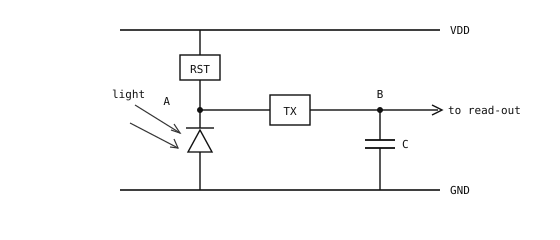

4.5. Pixelcellen¶
En kamerasensor är ett tvådimensionellt rutnät av ljuskänsliga celler, en per pixel. Varje cell är en liten elektrisk krets byggd kring en fotodiod som omvandlar ljus till en spänning, vilken i slutet av varje bildruta digitaliseras till ett enskilt numeriskt pixelvärde.
4.5.1. Kretsen¶
Det aktiva elementet i varje cell är en fotodiod – en liten ljuskänslig p-n-övergång i kisel. Under backspänning lagrar fotodioden en liten reservoar av laddning som inkommande fotoner kan frigöra, en liten bit i taget.

Pixelkretsen: en fotodiod med en återställningsbrytare som förladdar den, en överföringsbrytare som lämnar över den exponerade spänningen till en liten hållkondensator, och en utgång till utläsningsförstärkaren.¶
4.5.2. Exponeringscykeln¶
Varje cell följer samma fyrstegscykel för varje bildruta.
Förladdning. Cykeln börjar med en kort återställningspuls som stänger återställningsbrytaren RST och kopplar fotodioden till matningsskenan samt lyfter dess lagrade spänning till en känd referens. Brytaren öppnas sedan och lämnar fotodioden isolerad vid återställningsspänningen med sin laddningsreservoar full.
Exponering. Under exponeringsfönstret lämnas fotodioden att samla ljus. Varje absorberad foton kostar fotodioden en liten del av dess lagrade laddning. Ljus får den lagrade laddningen att försvinna – ju ljusare scen, desto snabbare laddas fotodioden ur och desto lägre dess spänning i slutet av fönstret. Det totala fallet är pixelns signal.
Sampling. Exponeringsfönstret avslutas med en kort puls på överföringsbrytaren TX. Medan TX är stängd töms fotodiodens återstående laddning ned på den lilla hållkondensatorn C som är kopplad till nod B. Spänningen på C registrerar nu pixelns mätning. TX öppnas sedan igen, vilket låser värdet på C och frigör fotodioden för att återställas inför nästa bildruta medan C väntar på sin tur vid utläsningsförstärkaren.
Utläsning. Utläsningsförstärkaren matar spänningen på C till en ADC, som omvandlar den till ett heltalsvärde – vanligtvis 10 till 12 bitars rå precision per pixel (ibland 14 i sensorer i högre prisklass). Det värdet är det råa pixelvärdet. Allt annat som pipelinen gör med bilden – korrigeringar, debayering, färggradering, formatkonvertering – utgår från detta tal, ett per cell.
4.5.3. Mättnad¶
Fotodioden har en maximal mängd laddning den kan avge innan dess reservoar är helt tömd. Bortom den punkten är pixeln mättad – ytterligare ljus har ingen effekt på den inspelade spänningen, och cellen läser sitt maxvärde oavsett hur mycket ljusare scenen blir.
Den maximala mängd fotodioden kan förlora innan den mättas är dess fulla brunnskapacitet. Större fysiska pixlar håller mer lagrad laddning och har därmed en högre full brunnskapacitet, vilket är anledningen till att sensorer med mindre och fler pixlar i allmänhet har ett lägre dynamiskt omfång än sina motsvarigheter med lägre upplösning.